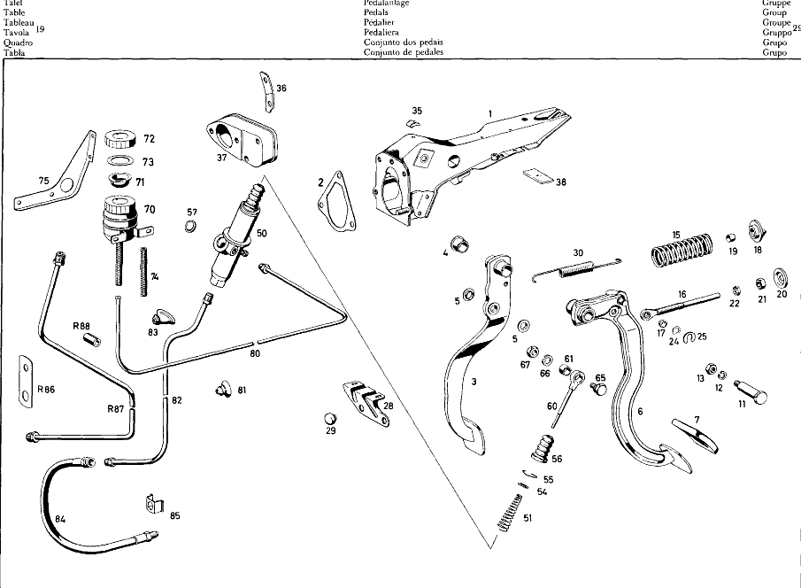

| № | Артикул | Название | Кол. | Примечание | Ограничение |
|---|---|---|---|---|---|
| 1 | A 110 290 10 31 | SUPPORT | 1 | Автоматическая коробка переключения передач | |
| 2 | A 110 431 00 80 | GASKET | 1 | Рулевое управление: Влево | |
| 3 | A 110 290 35 18 | ПЕДАЛЬ | 1 | ||
| 4 | A 110 291 05 50 | - Втулка подшипника | 2 | ||
| 5 | A 110 292 01 50 | - втулка | 2 | ||
| 6 | A 112 290 02 16 | ПЕДАЛЬ | 1 | Коробка передач | |
| 7 | A 110 291 01 82 | Накладка педали | 1 | BRAKE PEDAL для CLUTCH PEDAL | |
| 7 | A 110 291 01 82 | Накладка педали | 1 | BRAKE PEDAL для CLUTCH PEDAL Коробка передач | |
| 11 | A 110 291 05 74 | БОЛТ | 1 | Автоматическая коробка переключения передач | |
| 12 | N 000127 010200 | Пружинное кольцо | 1 | ||
| 13 | N 000936 010002 | ГАЙКА | 1 | ||
| 15 | A 110 993 05 01 | пружина | 1 | для CLUTCH PEDAL Коробка передач | |
| 16 | A 110 290 19 39 | Тяга привода | 1 | для CLUTCH PEDAL Коробка передач | |
| 17 | A 110 291 07 50 | - втулка | 2 | Коробка передач | |
| 18 | A 110 290 06 33 | ДЕРЖАТЕЛЬ | 1 | Коробка передач | |
| 19 | A 110 295 01 50 | - ВТУЛКА | 1 | Коробка передач | |
| 20 | A 111 291 04 91 | Тарелка пружины | 1 | Коробка передач | |
| 21 | N 070615 010001 | Гайка | 1 | Коробка передач | |
| 22 | N 007967 010000 | ГАЙКА | 1 | Коробка передач | |
| 24 | A 110 990 17 40 | ШАЙБА | 1 | PUSH ROD TO CLUTCH PEDAL Коробка передач | |
| 25 | A 000 994 04 10 | ПРЕДОХРАНИТЕЛЬ | 1 | PUSH ROD TO CLUTCH PEDAL Коробка передач | |
| 28 | A 110 291 01 40 | ДЕРЖАТЕЛЬ | 1 | ||
| 29 | A 111 292 00 86 | БУФЕР | 1 | для BRAKE PEDAL | |
| 30 | A 180 993 10 10 | ПРУЖИНА | 1 | для BRAKE PEDAL | |
| 35 | A 000 988 33 78 | Скоба | 1 | TO MOUNT CABLE Рулевое управление: Влево | |
| 36 | A 110 542 01 40 | ДЕРЖАТЕЛЬ | 1 | Рулевое управление: Влево | |
| 37 | A 111 295 05 45 | ФЛАНЕЦ | 1 | PEDAL SUPPORT AND BRAKE MASTER CYLINDER TO FRONT PANEL Автоматическая коробка переключения передач | |
| 38 | A 111 462 00 75 | ШАЙБА | NB | ||
| 50 | A 000 295 24 06 | ГЛАВНЫЙ ЦИЛИНДР | 1 | Коробка передач | |
| 51 | A 000 993 21 05 | - пружина | 1 | Коробка передач | |
| 54 | A 000 990 70 40 | - Диск | 1 | 26,9X15 Коробка передач | |
| 55 | A 000 994 33 35 | - Пружинное кольцо | 1 | Коробка передач | |
| 56 | A 000 295 09 83 | - МАНЖЕТА | 1 | Коробка передач [417] БОЛЬШЕ НЕ ПОСТАВЛЯЕТСЯ, ЗАКАЗЫВАТЬ КОМПЛЕКТ ПОСТАВКИ | |
| 57 | N 000470 020000 | - Шайба | 1 | Коробка передач | |
| 60 | A 110 290 18 39 | Тяга привода | 1 | Коробка передач | |
| 61 | A 110 295 02 50 | - Втулка подшипника | 1 | Коробка передач | |
| 65 | A 094 295 01 00 | болт | 1 | Автоматическая коробка переключения передач | |
| 65 | A 094 295 01 00 | болт | 2 | Коробка передач | |
| 66 | N 000127 008200 | КОЛЬЦО ПРУЖИННОЕ | 1 | Автоматическая коробка переключения передач | |
| 66 | N 000127 008200 | КОЛЬЦО ПРУЖИННОЕ | 2 | Коробка передач | |
| 67 | N 000936 008003 | ГАЙКА | 1 | Автоматическая коробка переключения передач | |
| 67 | N 000936 008003 | ГАЙКА | 2 | Коробка передач | |
| 70 | A 000 295 08 15 | БАЧОК | 1 | Коробка передач | |
| 71 | A 000 295 00 23 | - СЕТКА | 1 | Коробка передач | |
| 72 | A 000 295 02 37 | - ЗАГЛУШКА РЕЗЬБОВАЯ | 1 | Коробка передач | |
| 73 | A 000 997 68 41 | - УПЛОТНИТ. КОЛЬЦО | 1 | Коробка передач | |
| 74 | A 005 997 83 82 | - ШЛАНГ | 1 | Коробка передач | |
| 75 | A 110 295 03 40 | ДЕРЖАТЕЛЬ | 1 | Рулевое управление: ВправоКоробка передач | |
| 80 | A 110 290 03 13 | PIPE LINE | 1 | FROM EXPANSION TANK TO CLUTCH MASTER CYLINDER Рулевое управление: ВлевоКоробка передач | |
| 81 | A 111 997 21 81 | резиновая втулка | 1 | Коробка передач | |
| 82 | A 110 290 00 13 | ПРОВОД | 1 | FROM CLUTCH MASTER CYLINDER TO CONNECTING HOSE Рулевое управление: ВлевоКоробка передач | |
| 83 | A 110 997 14 81 | втулка | 1 | Коробка передач | |
| 84 | A 000 295 01 35 | ШЛАНГ | 1 | Коробка передач | |
| 85 | A 000 295 01 73 | Удерживающая пружина | 1 | Коробка передач | |
| 86 | A 112 295 01 60 | УПЛОТНИТ. КОЛЬЦО | 1 | Рулевое управление: ВправоКоробка передач | |
| 87 | A 112 290 05 13 | ПРОВОД | 1 | Рулевое управление: ВправоКоробка передач | |
| 88 | A 110 997 07 82 | ШЛАНГ | 1 | Рулевое управление: ВправоКоробка передач | |
| A 110 290 02 31 | ПОДШИПНИК | 1 | |||
| A 110 290 09 31 | ПОДШИПНИК | 1 | Коробка передач | ||
| A 110 431 03 80 | ПРОКЛАДКА УПЛОТНИТЕЛЬНАЯ | 1 | Рулевое управление: Вправо | ||
| A 110 290 27 18 | ПЕДАЛЬ | 1 | |||
| A 110 291 05 50 | - Втулка подшипника | 2 | |||
| A 110 291 01 82 | - Накладка педали | 1 | |||
| A 110 290 33 16 | CLUTCH PEDAL | 1 | Коробка передач | ||
| A 110 291 05 50 | - Втулка подшипника | 2 | Коробка передач | ||
| A 110 291 01 82 | - Накладка педали | 1 | Коробка передач | ||
| A 110 291 05 50 | - Втулка подшипника | 2 | Коробка передач | ||
| A 111 292 01 50 | ВТУЛКА | 1 | для BRAKE PEDAL [402] БОЛЬШЕ НЕ ПОСТАВЛЯЕТСЯ | ||
| A 111 292 02 50 | BEARING SLEEVE | 1 | для CLUTCH PEDAL Коробка передач | ||
| N 000931 012055 | Винт | 1 | Автоматическая коробка переключения передач | ||
| N 000931 012081 | Винт | 1 | Коробка передач | ||
| N 000127 012200 | Пружинное кольцо | 1 | |||
| N 000936 012000 | Гайка | 1 | |||
| A 110 291 06 74 | БОЛТ | 1 | Коробка передач | ||
| A 111 291 02 33 | ТЯГА | 1 | для CLUTCH PEDAL Коробка передач | ||
| A 110 991 00 07 | БОЛТ | 1 | PUSH ROD TO CLUTCH PEDAL Коробка передач | ||
| N 000433 008400 | Шайба | 1 | PUSH ROD TO CLUTCH PEDAL Коробка передач | ||
| N 000094 002002 | ШПЛИНТ | 1 | PUSH ROD TO CLUTCH PEDAL Коробка передач | ||
| A 111 291 00 86 | Упор | 1 | для CLUTCH PEDAL Коробка передач | ||
| N 000933 007013 | БОЛТ | 2 | BRACKET TO SUPPORT | ||
| N 000137 007200 | Пружинная шайба | 2 | BRACKET TO SUPPORT | ||
| A 110 291 00 87 | ЗАЩИТНАЯ ПАНЕЛЬ | 1 | Рулевое управление: Вправо | ||
| N 000933 004003 | Винт | 2 | PROTECTIVE PLATE TO SUPPORT Рулевое управление: Вправо | ||
| N 000127 004200 | Пружинное кольцо | 2 | PROTECTIVE PLATE TO SUPPORT Рулевое управление: Вправо | ||
| N 000934 004000 | Гайка | 2 | PROTECTIVE PLATE TO SUPPORT Рулевое управление: Вправо | ||
| N 007976 005200 | САМОРЕЗ | 2 | SCREW, SHEET METAL TO MOUNT CABLE Рулевое управление: Вправо | ||
| A 001 988 10 78 | Скоба | 1 | TO MOUNT CABLE Рулевое управление: Вправо | ||
| A 000 988 34 78 | Скоба | 1 | TO MOUNT CABLE Рулевое управление: Вправо | ||
| A 000 988 18 78 | Скоба | 1 | TO MOUNT CABLE Рулевое управление: Вправо | ||
| A 111 295 04 45 | ФЛАНЕЦ | 1 | PEDAL SUPPORT AND BRAKE MASTER CYLINDER TO FRONT PANEL Коробка передач | ||
| N 000931 008091 | Винт | 2 | PEDAL SUPPORT AND BRAKE MASTER CYLINDER TO FRONT PANEL | ||
| N 000931 008072 | Винт | 2 | PEDAL SUPPORT AND BRAKE MASTER CYLINDER TO FRONT PANEL Автоматическая коробка переключения передач | ||
| N 000931 008085 | Винт | 2 | PEDAL SUPPORT AND BRAKE MASTER CYLINDER TO FRONT PANEL Коробка передач | ||
| N 000127 008200 | КОЛЬЦО ПРУЖИННОЕ | 4 | PEDAL SUPPORT AND BRAKE MASTER CYLINDER TO FRONT PANEL | ||
| N 000934 008000 | Гайка | 4 | PEDAL SUPPORT AND BRAKE MASTER CYLINDER TO FRONT PANEL | ||
| N 000931 008091 | Винт | 1 | SUPPORT TO CROSS MEMBER Рулевое управление: Вправо | ||
| N 000433 008403 | Шайба | 1 | SUPPORT TO CROSS MEMBER Рулевое управление: Вправо | ||
| N 000137 008200 | Пружинная шайба | 1 | SUPPORT TO CROSS MEMBER Рулевое управление: Вправо | ||
| N 000934 008000 | Гайка | 1 | SUPPORT TO CROSS MEMBER Рулевое управление: Вправо | ||
| A 000 295 18 06 | MASTER CYLINDER | 1 | Коробка передач | ||
| A 000 295 04 83 | - Манжета | 1 | Коробка передач | ||
| A 000 295 00 37 | - Резьбовая пробка | 1 | Коробка передач | ||
| A 000 420 10 55 | - Клапан выпуска воздуха | 1 | Коробка передач | ||
| A 000 421 08 87 | - Защитный колпачок | 1 | |||
| A 000 586 07 29 | REPAIR KIT | 1 | Коробка передач | ||
| A 000 586 06 29 | РЕМКОМПЛЕКТ | 1 | Коробка передач | ||
| A 110 290 09 39 | PISTON ROD | 1 | Коробка передач | ||
| A 111 295 01 50 | - втулка | 1 | Коробка передач | ||
| N 000931 006050 | Винт | 2 | CLUTCH MASTER CYLINDER TO SUPPORT Коробка передач | ||
| N 000137 006200 | Пружинная шайба | 2 | CLUTCH MASTER CYLINDER TO SUPPORT Коробка передач | ||
| N 000934 006000 | Гайка | 2 | CLUTCH MASTER CYLINDER TO SUPPORT Коробка передач | ||
| A 110 295 00 71 | БОЛТ | 1 | PISTON ROD TO BRAKE PEDAL AND TO CLUTCH PEDAL Автоматическая коробка переключения передач | ||
| A 110 295 00 71 | БОЛТ | 2 | PISTON ROD TO BRAKE PEDAL AND TO CLUTCH PEDAL Коробка передач | ||
| N 000127 010200 | Пружинное кольцо | 1 | PISTON ROD TO BRAKE PEDAL AND TO CLUTCH PEDAL Автоматическая коробка переключения передач | ||
| N 000127 010200 | Пружинное кольцо | 2 | PISTON ROD TO BRAKE PEDAL AND TO CLUTCH PEDAL Коробка передач | ||
| N 000936 010002 | ГАЙКА | 1 | PISTON ROD TO BRAKE PEDAL AND TO CLUTCH PEDAL Автоматическая коробка переключения передач | ||
| N 000936 010002 | ГАЙКА | 2 | PISTON ROD TO BRAKE PEDAL AND TO CLUTCH PEDAL Коробка передач | ||
| A 000 295 10 83 | - МАНЖЕТА | 1 | Коробка передач | ||
| N 000933 006010 | Винт | 2 | BRAKE FLUID RESERVOIR TO BRACKET AT COWL Коробка передач | ||
| N 000127 006200 | Пружинное кольцо | 2 | BRAKE FLUID RESERVOIR TO BRACKET AT COWL Коробка передач | ||
| N 000934 006000 | Гайка | 2 | BRAKE FLUID RESERVOIR TO BRACKET AT COWL Коробка передач | ||
| A 110 290 04 13 | PIPE LINE | 1 | FROM EXPANSION TANK TO CLUTCH MASTER CYLINDER Рулевое управление: ВправоКоробка передач | ||
| A 112 290 01 13 | PIPE LINE | 1 | FROM CLUTCH MASTER CYLINDER TO CONNECTING HOSE Рулевое управление: ВлевоКоробка передач | ||
| A 112 290 02 13 | PIPE LINE | 1 | FROM CLUTCH MASTER CYLINDER TO CONNECTING HOSE Рулевое управление: ВправоКоробка передач | ||
| A 110 290 01 13 | ПРОВОД | 1 | FROM CLUTCH MASTER CYLINDER TO CONNECTING HOSE Рулевое управление: ВправоКоробка передач | ||
| A 111 997 07 72 | ШТУЦЕР | 1 | Рулевое управление: ВправоКоробка передач | ||
| A 002 988 49 78 | Скоба | 1 | Рулевое управление: ВправоКоробка передач |
Позиций: 127 · подписано на схемах: 57 · колесо — плавный зум в курсор, перетаскивание — пан, двойной клик — зум, клик по артикулу — скопировать.